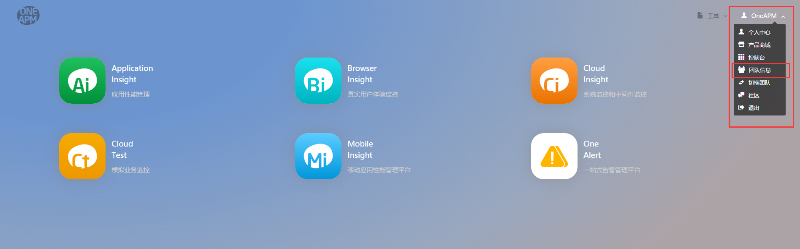
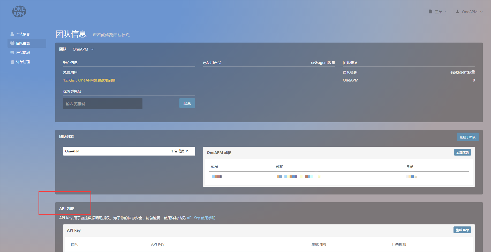
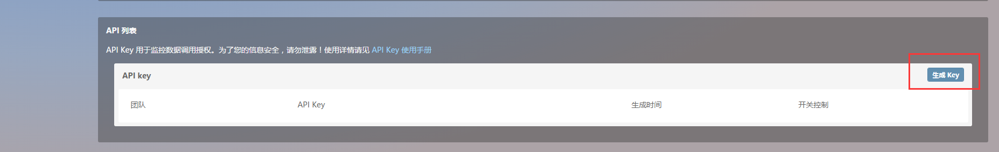
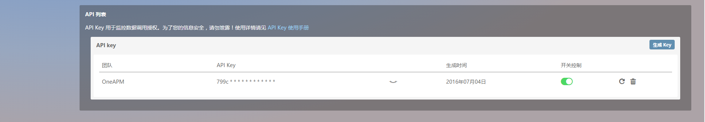

OneAPM REST API
OneAPM REST API (Application Programming Interface) 是 OneAPM 对用户开放的应用程序编程接口，您可以通过调用 OneAPM 提供的 API，读取您的服务监控数据。
API key
在您使用 OneAPM REST API 之前，请生成您的专属 API key。目前，只有独立注册用户（团队admin）拥有生成 API key 的权限。
1. API key 列表
登陆后，点击控制台右上角按钮，在下拉菜单中选择[团队信息]，进入用户中心团队信息展示界面。

在团队信息中您可以找到 API key 列表，列表位置如图中标记部分所示。

列表中，团队的 API key 默认为空。

生成 API key
选择欲生成 API key 的团队，点击 API 列表右侧的[生成 key]按钮，即可生成该团队 API key。

列表项
列表中展示的是该团队的 API key 信息和相关的功能按键，从左至右依次为：
- 团队：当前团队名称；
- API key：团队 API key 内容，列表中默认只显示 API key 的部分内容，可以使用 显示/隐藏 功能进行显示模式切换；
- 显示/隐藏：选择显示/隐藏 key 的内容 ；
- 生成时间：API key 最新生成时间；
- 开关控制：控制 API key 是否有效，开，有效，可正常使用此 API key 调用相关的 API/关，无效，此 API key 认证失效，使用此 API key 将无法调用相关的 API；
- 重新生成：重新生成 API key，key 的内容将被更新，之前的 API key 会立即失效，key 内容无法回退或恢复，请谨慎操作；
- 删除：删除现有的 API key，删除后之前的 API key 会立即失效，key 内容无法回退或恢复，请谨慎操作。
2. 相关权限
Admin
所有团队的 API key 生成/重新生成/删除 动作只能由 admin 用户操作，并且每个团队同一时间只能拥有一个 API key。Admin 在团队中具有最高权限。
Manager
API 列表对于 manager 用户是可见的，manager 可查看所属团队 API key 的相关内容和控制团队 API key 的开/关。
User
API 列表对于 user 用户是不可见的。